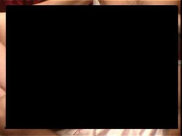

Facebook
 De: La Frikipedia, la enciclopedia extremadamente seria.
De: La Frikipedia, la enciclopedia extremadamente seria.
| De la serie sitios web de ayer y de hoy:
|
Facebook Caralibro
|
|
|
| Página de interconexion múndial donde se reunen miles y millones de personas todas juntas para hacer absolutamente NADA
|
|
| Dirección:
|
[1]
|
| Se dedica a:
|
Ociocizar al mundo y Stalkear.
|
| País de origen:
|
París, Luxemburgo
|
| Año de fundición:
|
1700 y dele (tuvieron que esperar a que se creara el internet a inicios del siglo XX, y salió exactamente en 2004)
|
| Propietario:
|
Mark SuckBerga Zuckerberg
|
| Creador:
|
Renasexistas franceses y luxemburgianos
|
| Estado actual:
|
Petardos de gente, creeme
|
«¿Myspace?»
~ Alguien sobre Facebook
«El hamor e un arma de doble filo»
~ Jonhy Acaba de cortar con la Vane
«Estudio, estudioo, estudiok, estudeook, estubook, esbook, fesbook, facebook»
~ Típico Facebookero en un dia normal
«Démosle a estos pendejos un poco de vida»
~ Dios relacionando al Feisbuk con alguien sin qué hacer, vida propia o imaginación
«Tengo una idea ¿Porque no hacer un smile de una mierda con ojos?»
~ Mark Zuckerberg teniendo la idea del :poop:
«¿Hijo me has aceptado en el feisbuk?»
~ Madre noob hablando con su hijo
«No me llegó nada mamacita querida»
~ Hijo troll engañando a su madre
Feisbuk o tambien llamada "FaceFuck" pero mas conocido como Failbook o Chochbuk, que traduce en español "Caralibro" y que como cosa rara muy pocos notan, porque casi todos la que lo usan son emos, mañes, stalkers o cantidad de personas que no tienen nada mas que hacer que sentarse a subir fotos y esperar que alguien la comente para decirle "huy si weon pienso lo mismo"; es una página web (tamaño extra ofico) de interconexion múndial creada por renacentistas franceses del siglo XD, el mas destacado Mark Zuckerberg, donde se reunen miles y millones de personas de todo el mundo y a toda hora para hacer absolutamente NADA.
Es el principal responsable de la muerte de varios infelices servicios como MSN, Yahoo Messenger, Fotolog, MySpace, Google+ (¿que es eso, se come?) y todas las demás redes sociales existentes menos el pajarito de Twitter con el que compiten por ver cual es el servicio más chusma de todos.
Entre las principales aplicaciones que tiene esta página, encontramos la de escribir comentarios, stalkear, subir fotos del tipo autofotos al espejo o cosas bajadas de paginas porno, test de personalidad(para saber que tan chulo, emo, musical, modelo y weon eres) y juegos de mierda que son solo publicidad para que entres a otras paginas te registres y te llenen el correo de spam y la pc de virus, en los cuales puedes competir con tus amigos, desconocidos totales que agregas porque tienen buenas gemelas o porque es un weon con un calcetin dentro del boxer.
 Imagen subida comunmente por un facebookero cualquiera (fue censurada para que no bloqueen el artículo)
Inicios
A que consigo 10000 personas que me ayuden a demostrar que Facebook es un invento de la CIA Feisbuk fue una página web creada por renacentistas franceses en el siglo XVIII para permitir la comunicación y encuentros sexuales (Y también la subida de gallegos.
Intento de re-fundación
Años después Napoleón Bonaparte intentó rescatar el proyecto "Feisbuk" y creó "Mai Speis" (a veces mal escrito como MySpace) y para evitar cometer el mismo error que sus antecesores logró crear una mini-red (una especie de internet de muy baja cobertura) que se transportaría por París a una velocidad de 0,0000000000005 B por minuto. Cuando intentó publicar su proyecto Mai Speis fracasó debido a que era muy pesado y preferia juegar club pinguin
Re-fundación
Finalmente el proyecto no fue rescatado hasta que un día a finales del siglo XX un Antropólogo de la Univeridad de Harvard encontró en un paseo que hizo por La Paz (cuidad que se encuentra en Bolivia a pocos kilometros de París) la laptop de madera (de 0,00001 B de memoria RAM) en la que los renacentistas franceses hicieron Feisbuk y dijo "¡Mierda! ¡Publicaré esto por internet y me haré millonario! ¡Ah! ¡Y lo volveré muuucho más pesado y lento para que la gente sufra y así conquistar al mundo!", lametablemente no pudo llegar al objetivo final de su proyecto porque accidentalmente se suicidó y le absorvió el proyecto. Hoy en día se lo disputan Youtube y Gugel.
Grupos Feisbukeros relevantes
Aquí tenemos algunos de los grupos mas relevantes de Feisbuk a lo largo de su triste existencia:
Grupos que se crearon durante la fundación de Feisbuk
Se dice que este fue un virus que alguien insertó.
- "Todos los que queremos decapitar a la Reina"
- "A que consigo 1.000.000 de franceses que no quieren la Marsellesa como himno nacional!!"
- "500.000 Personas para que Pepe Botellas deje de tomar"
- "Liberté, égalité, fraternité para lema nacional!!! :D"
- "1.000.000 De personas para que acaben "padre e hijos" (recien comenzo pero ya querian quitarlo por lo
marica bueno que es)"
- Yo también participé en el mayo francés y me tomé la Sorbona.
- Yo tampoco tengo facebook.
- asdf ... asi es, en esos tiempos asdf eran las únicas letras de los teclado de (según el traductor de gugle: ventanas)
Grupos más polémicos (desde la re-fundación de Feisbuk)
- "El contenido de Frikipedia es pura mentira!" (creado por los trabajadores de la Wikipedia)
- "Gregory House también se burló de mi en una consulta" (creado por Foreman)
- A que consigo 100000 personas que logren hacer que Perico de los Palotes se tome una foto en traje de gala
- "Para que nisito pueda entrar en la F1"
- "Coprófilos del Mundo, uníos"
- " A mi tambien me dejo mi novia por crear paginas estupidas"
Ejemplos de estados
Como si fuese un castigo a los grandes eruditos de la Frikipedia, los usuarios de facebuck se tomaron la tarea de hacer un concurso eterno de manera inconsciente para ver quién pone el estado más estúpido de la historia de la humanidad. He aqui algunos ejemplos de ellos:
- Los Spanglishados: Son aquellos que se creen bilingues solo por decir "Ok". Están los casos del "I Loviu Bulda" ó "Vamonó al Pary", típico de los desadaptados ignorantes existentes en la fauna Monal. También se pueden observar casos como "Eres mi Ladyyy" ó "Eres mi world", típicos romantiestúpidos que creen que con eso consiguen más popularidad y así lograr su sueño platónico que es perder la virginidad
anal.
- Los Plagiadores: Estos son los más detestados por los grandes eruditos de la frikipedia, ya que osan a robar el buen conocimiento de los pocos hombres pensantes que han habido en este planeta, y de paso se lo acreditan a ellos mismos. Tenemos el ejemplo de: "Pienso luego existo"... El plagiador copia y pega la frase (Porque es tan flojo que no quiere escribir tres palabras...). Luego la publica y no pone el nombre del autor de la frase para que crean que es de él y así sentir gran satisfacción
anal. Luego, el detestable ignorante amigo le da "me gusta", y le pregunta al plagiador: ¿Es tuyo ese pensamiento? A lo que el plagiador contesta: ...Ehmm... algo. (René Descartes debe estar revolcándose en su tumba al ser victima de semejante ignorancia).
- Los Cancioneros: Peores que los plagiadores, son esas personas que creen que nadie nunca ha escuchado una canción de algún
idiota ídolo suyo. Lo peor del caso es que no ponen el nombre del "artista" sino que pretenden arreglarlo todo colocándole al principio y al final de la estrofa el siguiente ícono: (8). Por ejemplo: (8) Baby, baby, baby wowwww... (8) (Típica Justin Birrionda fanática que cree que nadie en el mundo ha escuchado el estúpido coro de "Baby" de Justin Fliperr).
Suele pasar que ponen un verdadero testamento como estado, como en el siguiente ejemplo:

|
(8)... Ya nah encuentro mis mañana sin tus mnsags de txtos
y el TE AMO buenos dias q rompe tooh mis contxtos
aún rcuerdoh ese billete q agarré en la banquetah
yo teniah mucha ambree y me comí rolo de arepah
es increible sta historia y para muchos sorprendnte
q sigams tan unidos y luchems con la corriente
si llegas a caer rápidamente te levanto
y sanarems las triztezs cn besos y los TE AMO
te direh que lo que eh de pana y de corazón
pero moscah porque se me puedeh rompé el condónn
las caricias los abrazos el silencio q solo habla
y la mirada de nuestros ojos mas fuerte q mil palabras.
TE AMO GORDA. A 2 dias de nuestro primer beso... (8)
|

|
|
|
- Los "Youtuberos": Son los culpables de que los dueños de Youtube se rasquen los huevos. El "Youtubero" es aquel personaje que en todos sus estados siempre pone el link de un video de Youtube (Generalmente son Rockeros, Comegatos, Gilipollas, Frikis, Canis, Tarados, Retrasados, Y admiradores de Justin Quegay y Ricky Martín). Parece ser que tienen el sueño platónico de que Youtube y Facebook se unan en uno solo, y como quieren lograr esa unión copia el código URL del video que más les guste (Por lo general el más estúpido) y lo pegan en su estado. Entonces, cada vez que entras a una cuenta de estos tipos te encuentras con semejante código hebréo en clave morse: http://wwwyoutubecomresultssearch_query=l+fikipediaq=fskduijjsksidijdfudtehdbsebdhsjeudhsydieusnsgdtejkopppzzzusuejduebs
- Los Copia/Pega: Seres realmente fastidiosos con sus cadenitas estúpidas sobre mensajes que a nadie le interesa. Por ejemplo:
"Copia y pega si amas a tu mamá" (¿Y los huérfanos qué?)
"Copia y pegas si te sientes gay" (Muy usado)
"Copia y pega si te gusta Justin Bieber" (Inventado por los anteriores)
"Copia y pega si quieres que ponga la webcam" (Usado por los gordos pajeros que se la creen)
"Copia y pega por nada" (Sin comentarios)
"Copia y pega para salvarle la vida a Amy Lee" (Jajajajajajajaja)
"Copia y pega para matar a Chavez" (A los 3 segundos de haberse inventado fue expropiado el Facebook en Venezuela y pasó a llamarse "El Bolivarfeisbok rojo rojito")
- Los click en like:Estos tienen algo que ver con "Los Spanglishados";ya que dicen "like" en vez de "me gusta".
son seres sin nada mas que hacer que decir click en me gusta si odias a justin bieber etc.A estos imbéciles les gusta publicar eso por que son las únicas notificaciones que les llegan.
E aquí unos ejemplos:
Click En Megusta Si rumbiaras Hoy;♥ Ho Mañana.. ?
Si Eres Una Orgullosa JONATIKA Da Click En Megusta ;D
Si quieres abrazarme, haz click en Megusta.
Click megusta si tienes sueño pero aun asii siges en el FACEBOOK://
click en "MEGUSTA" si encuentras el numero 5
SSSSSSSSSS SSSSSSSSSS SSSSSSSSSS SSSSSSSSSS SSSSSSSSSS
SSSSSSSSSS SSSSSSSSSS SSSSSSSSSS SSSSSSSSSS SSSSSSSSSS
SSSSSSSSSS SSSSSSSSSS SSSSSSSSSS S5SSSSSSSS SSSSSSSSSS
SSSSSSSSSS SSSSSSSSSS SSSSSSSSSS SSSSSSSSSS SSSSSSSSSS
SSSSSSSSSS SSSSSSSSSS SSSSSSSSSS SSSSSSSSSS SSSSSSSSSS.
LIKE si presionaste F3 y buscaste 5 para resolver lo anterior.
LIKE si tienes vecinos chismosos.
Like si eres adict@ al facebook ;D.
LIKE SI TE GUSTA ( BOB ESPONJA )
like si no puedes pasar un dia sin abrir el facebook!! :D
Tipos de Usuarios
- El gustoso: El tío que tiene una cuenta en el
feobook feisbuk y que no entró desde hace años (por que se pajeo durante todo ese tiempo). Solo saben dar al boton Me gusta En cualquier sitio en el que le salga (Frikipedia, Taringa!Poringa, Tuenti)
- El plasta: Comenta en todos y cada uno de tus estados y en los de sus "amigos". Se levanta y comenta en el face, come mientras está en el face, se la toca mirando fotos de chavalas en el face, duerme con el face abierto... Recomendamos matar a estas personas o en su defecto eliminarlas.
- El Salido: Este comenta a todas la tías, suele ser un cani lo suficiente listo para saber usar un ordenador.
- El Salido Tímido: Simplemente siempre pone "Me gusta" en todos los estados de una chavala.
- El Inexistente: Te agrega al face y no sabes nada de el en tu vida.
- El Cachondo y el Rapero: Se ponen cosas raras en el nombre, el cachondo suele llamarse cosas como: Juan Palomez Tumeloguisasymelocomes. Y el rapero algo como: Arka Pérez Raper, cuando en realidad se llama Alberto.
- La tía buena: Tiene 48574857845, 3 contactos y 1.000 fotos semidesnuda. ¿Quién quiere porno teniendo esto?
- El Stalk Es el que te agrega probablemente con una multicuenta, para espiarte todo el día, leer las cosas que escribes, fisgonear tus fotos, espiar a tus amigos... y tú ni te recuerdas de él o sabes de su existencia.
- La ardida: Esta todo el bendito día en el feis solo para ver lo que hace su ex y "casualmente" tienen los mismo gusto y "casualmente" tienen hasta los mismos amigos y por cosa del destino cuando el publica que va al baño... ella también.
- La popular: Usuaria muy popular por estar que se cae de buena, generalmente neuroticas como ellas mismas, pueden ignorarte todo lo que quieras y agregar contactos a lo pendejo sin conocerlos, pero nooooo las borres de tu cuenta porque eso es un pecado peor que el aborto... LOL
- El Feo: Aparentemente es una persona normal, pero siempre pone fotos de perfil de hace 10 años, cuando su fealdad aún era soportable. También, gracias al avance de la wii pueden ponerse como foto de perfil un "mii" o (esto ya es lo último) su imagen Pocoyoizada.
- Bill Gates: siempre intentado
comerte la polla meterse en tu perfil y así insultar a tus mascotas amigos. Y mas desde que Fasebuk mato a MSN Messenger.
- El fantasma: Es el tipo de usuario que no tiene foto, no escribe nunca ni se conecta. Simplemente se conectó el día que se hizo la cuenta, habló con un par de amigos y cerró no tocándolo mas. Se podría decir que está muerto.
- El Troll: También llamado cretino, con el simple empleo de cinco o seis palabras consigue que se amenacen de muerte dos personas entre si mientras el contempla su creacción, se cree que fue un troll el que provocó la guerra fría mediante este mecanismo.
- El noob: Persona que se acaba de crear el facebook y pone de estado el nombre de la chica que le gusta por error( Estaba buscando fotos de ella para pa...).
- El maleante descabellado: También llamado "Pianista rápido" o "Virus de foro".Este sujeto se encarga de llenarte de notificaciones con la excusa de que le gustaron todas tus imágenes/fotos,estados,comentarios y publicaciones en muro. Algunos dicen que en realidad solo trata de vigilarte lo más que pueda para llevarle información tuya a la FBI ,quien sabe.
- La etiqueta caminante: Dícese de sujeto de genero Masculino/femenino/Hermafrodita que solo vive para etiquetarte en sus fotos y así no sentirse un Forever alone toda su vida. En varios casos, se trata de personas que en años anteriores trabajaban en ponerle la etiqueta de precio a las polentas presto pronta.
- El Solitario Aquel usuario de Facebooth , que es tan Forever Alone que se dedica a ponerse un "me gusta" (L) en sus propios comentarios , lo cual es realmente patético (y gracioso pero de un modo perverso) y merece el abucheo constante por parte de las personas de un IQ mayor a 12345553223232323. Por lo general , estos tarados suelen no solo están solos en la vida real , si no también en la virtual. Tiene amigos pero sudan de el generalmente, solo lo felicita su madre por facebook en su cumple.
- El Niño rata: Usuario que solo se conecta para jugar a juegos e insultar a los que supera(pocos), emplea su tiempo en jugar o investigar sobre juegos que no valen nada.
La Biografía.
En 2012 a los muy reputísimos se les ocurrió inventar una especie de linea de tiempo (que por cierto muchos pendejos inventan cosas como 2contrata 5 prostitutas y te quitaremos la biografía). Ésta cosa sirve para que los muy pendejos como tú pusieran en esa maldita linea lo que hacen todos los días a partir de un nuevo año (al igual que twitter, por ejemplo "ayer cagué a las 3:30! p.d por cierto cagué bolitas") Bueno pues de eso se trata :)
Véase también
Enlaces externos
Autor(es):
- Fordus
- Aque
- Epikurolibre
- Azulejos
- El Sevillano
- Ronaldo24
- IgnacioVIP
- Vargasproduction2
- Arlan 1313
- Claudiobueno123
Frikipedia 2005-2016, Licencia
GFDL 1.2 - Extraído por FrikiLeaks